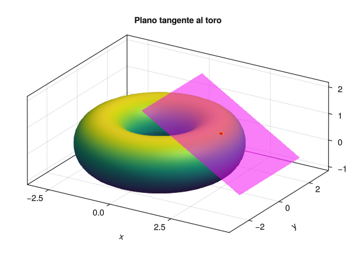

18 2025-11-12
Examen de Análisis III
Ejercicio 18.1 El envoltorio de una tableta de chocolate tiene forma de prisma de altura \(h\) con base un triángulo equilátero de lado \(l\). El coste de la base es de 2 € por metro cuadrado y de los laterales de 3 € por metro cuadrado. Si el volumen de la tableta es 100 cm\(^3\), ¿cuáles son las dimensiones óptimas para fabricar el envoltorio con el menor coste posible? Usar el método de los multiplicadores de Lagrange.

El volumen del prisma es el área de la base por la altura. La base es un triángulo equilátero de lado \(l\), por lo que su altura es \(l\cdot \operatorname{sen}{\pi/3} = \frac{l\sqrt{3}}{2}\), y su área es \(\frac{\sqrt{3}}{4}l^2\). Por lo tanto, el volumen \(V\) del prisma es \(V(l, h) = \frac{\sqrt{3}}{4}l^2 h\). Como el volumen tiene que ser \(100\) cm\(^3\), o lo que es lo mismo \(10^{-4}\) m\(^3\), tenemos la restricción \(V(l, h) = 10^{-4}\).
Por otro lado, el envoltorio del prisma está formado por dos triángulos equiláteros (la base y la tapa) y tres rectángulos (los laterales). El área de la base y la tapa es \(2 \frac{\sqrt{3}}{4}l^2\). El área de los tres laterales es \(3 \cdot l \cdot h = 3lh\). Por lo tanto, el coste \(C\) del envoltorio viene dado por la función
\[ C(l, h) = 2 \cdot 2 \frac{\sqrt{3}}{4}l^2 + 3 \cdot 3lh = \sqrt{3}l^2 + 9lh. \]
Para minimizar el coste con la restricción del volumen, usamos el método de los multiplicadores de Lagrange, imponiendo que los gradientes de \(C\) y \(V\) sean proporcionales \(\nabla C = \lambda \nabla V\). Calculamos los gradientes:
\[ \nabla C(l,h) = \left(2\sqrt{3}l + 9h, 9l\right) = \lambda \nabla V(l,h) =\left(\frac{\sqrt{3}}{2}l h, \frac{\sqrt{3}}{4}l^2\right). \]
Esto nos da el sistema de ecuaciones
\[\begin{align*} 2\sqrt{3}l + 9h &= \lambda \frac{\sqrt{3}}{2}l h, \\ 9l &= \lambda \frac{\sqrt{3}}{4}l^2, \\ \frac{\sqrt{3}}{4}l^2 h &= 10^{-4}. \end{align*}\]
Despejando \(\lambda\) de la segunda ecuación tenemos
\[ \lambda = \frac{36}{\sqrt{3}l} = \frac{12\sqrt{3}}{l}, \]
y sustituyéndolo en la primera ecuación, obtenemos
\[ \begin{gathered} 2\sqrt{3}l + 9h = \frac{12\sqrt{3}}{l} \cdot \frac{\sqrt{3}}{2}l h = 18 h \\ \Leftrightarrow 2\sqrt{3}l = 9h \Leftrightarrow h = \frac{2\sqrt{3}}{9}l. \end{gathered} \]
Sustituyendo este valor de \(h\) en la ecuación del volumen, tenemos
\[ \begin{gathered} \frac{\sqrt{3}}{4}l^2 \cdot \frac{2\sqrt{3}}{9}l = 10^{-4} \Leftrightarrow \frac{3}{18}l^3 = 10^{-4} \\ \Leftrightarrow l^3 = 6 \cdot 10^{-4} \Leftrightarrow l = \sqrt[3]{6 \cdot 10^{-4}} \approx 0.0843 \text{ m} = 8.43 \text{ cm}. \end{gathered} \]
Finalmente, sustituyendo este valor de \(l\) en la expresión de \(h\), obtenemos
\[ h = \frac{2\sqrt{3}}{9} \cdot \sqrt[3]{6 \cdot 10^{-4}} \approx 0.0324 \text{ m} = 3.24 \text{ cm}. \]
Ejercicio 18.2 Dado el toro de ecuación \(\left(\sqrt{x^{2}+y^{2}}-2\right)^{2}+z^{2}=1\),
Calcular el plano tangente a la superficie del toro en el punto \(\left(\frac{5}{2},0,\frac{\sqrt{3}}{2}\right)\).
¿En qué dirección debemos movernos desde el punto \((\frac{5}{2},0)\) para que la tasa de variación instantánea de \(z\) sea 1?
Expresar el toro en coordenadas cilíndricas y calcular la derivadas parciales de \(z\) con respecto a \(r\) y \(\theta\) en el punto \(\left(\frac{5}{2},0,\frac{\sqrt{3}}{2}\right)\). ¿Cómo se interpretan estas derivadas parciales? ¿Para qué valores de \(r\) y \(\theta\) se alcanza un máximo relativo de \(z\)?
Si definimos la función \(F(x,y,z) = \left(\sqrt{x^{2}+y^{2}}-2\right)^{2}+z^{2}-1\), el toro es la superficie de nivel \(F(x,y,z) = 0\), por lo que su gradiente en cualquier punto de la superficie es normal a la superficie en ese punto. Calculamos el gradiente:
\[ \nabla F(x,y,z) = \left(2\left(\sqrt{x^{2}+y^{2}}-2\right)\frac{x}{\sqrt{x^{2}+y^{2}}}, 2\left(\sqrt{x^{2}+y^{2}}-2\right)\frac{y}{\sqrt{x^{2}+y^{2}}}, 2z\right), \]
que en el punto \(\left(\frac{5}{2},0,\frac{\sqrt{3}}{2}\right)\) vale
\[ \nabla F\left(\frac{5}{2},0,\frac{\sqrt{3}}{2}\right) = \left(1,0,\sqrt{3}\right). \]
Así pues, la ecuación del plano tangente en ese punto es
\[ \begin{gathered} \left((x,y,z) - \left(\frac{5}{2},0,\frac{\sqrt{3}}{2}\right)\right) \cdot \nabla F\left(\frac{5}{2},0,\frac{\sqrt{3}}{2}\right) = 0, \\ \Leftrightarrow \left((x - \frac{5}{2}), y - 0, z - \frac{\sqrt{3}}{2}\right) \cdot (1,0,\sqrt{3}) = 0, \\ \Leftrightarrow \left(x - \frac{5}{2}\right) + \sqrt{3}\left(z - \frac{\sqrt{3}}{2}\right) = 0, \\ \Leftrightarrow x + \sqrt{3}z = 4. \end{gathered} \]

Plano tangente al toro Para calcular la derivada direccional necesitamos primero el gradiente. Calculamos el gradiente de \(z\) usando la función implícita \(F(x,y,z) = 0\):
\[ \nabla z\left(\frac{5}{2},0\right) = -\left(\frac{F_x\left(\frac{5}{2},0,\frac{\sqrt{3}}{2}\right)}{F_z\left(\frac{5}{2},0,\frac{\sqrt{3}}{2}\right)}, \frac{F_y\left(\frac{5}{2},0,\frac{\sqrt{3}}{2}\right)}{F_z\left(\frac{5}{2},0,\frac{\sqrt{3}}{2}\right)}\right) = \left(-\frac{1}{\sqrt{3}}, 0\right). \]
La derivada direccional en la dirección del vector unitario \(\mathbf{u}\) es \(|\nabla z\left(\frac{5}{2},0\right)| \cos(\alpha)\) donde \(\alpha\) es el ángulo que forma el vector \(\mathbf{u}\) con el gradiente \(\nabla z\left(\frac{5}{2},0\right)\). Pero como \(|\nabla z\left(\frac{5}{2},0\right)| = \frac{1}{\sqrt{3}}\), para que la derivada direccional valga 1, es necesario que \(\cos(\alpha) = \sqrt{3}\), lo cual es imposible. Por lo tanto, no existe ninguna dirección en la que la tasa de variación instantánea de \(z\) sea 1.
En coordenadas cilíndricas, \(x = r\cos(\theta)\), \(y = r\sin(\theta)\) y \(z = z\), por lo que la ecuación del toro es \(\left(r - 2\right)^{2}+z^{2}=1\). Despejando \(z\), tenemos \(z(r,\theta) = \pm\sqrt{1 - (r - 2)^2}\). Si tomamos la raíz positiva, que corresponde al semitoro positivo, las derivadas parciales son
\[\begin{align*} \frac{\partial z}{\partial r}(r,\theta) &= \frac{-(r - 2)}{\sqrt{1 - (r - 2)^2}}, \\ \frac{\partial z}{\partial \theta}(r,\theta) &= 0. \end{align*}\]
y en el punto \(\left(\frac{5}{2},0\right)\), que en coordenadas cilíndricas es \((r,\theta) = \left(\frac{5}{2},0\right)\), valen
\[\begin{align*} \frac{\partial z}{\partial r}\left(\frac{5}{2},0\right) &= \frac{-\left(\frac{5}{2} - 2\right)}{\sqrt{1 - \left(\frac{5}{2} - 2\right)^2}} = -\frac{1}{\sqrt{3}}, \\ \frac{\partial z}{\partial \theta}\left(\frac{5}{2},0\right) &= 0. \end{align*}\]
Estas derivadas parciales indican que en el punto \(\left(\frac{5}{2},0\right)\), un aumento en \(r\) provoca una disminución en \(z\) a razón de \(\frac{1}{\sqrt{3}}\) unidades de \(z\) por cada unidad de \(r\), mientras que un cambio en \(\theta\) no afecta a \(z\), es decir, si mantenemos la distancia al origen constante y cambiamos el ángulo, la altura \(z\) permanece igual.
Para encontrar los valores de \(r\) y \(\theta\) que maximizan \(z\), tenemos que obtener los puntos críticos de \(z(r,\theta)\) igualando el gradiente al vector nulo.
\[\begin{align*} \frac{\partial z}{\partial r}(r,\theta) &= \frac{-(r - 2)}{\sqrt{1 - (r - 2)^2}} = 0.\\ \frac{\partial z}{\partial \theta}(r,\theta) &= 0. \end{align*}\]
Así pues, el único punto crítico se obtiene cuando \(r - 2 = 0\), es decir, cuando \(r = 2\). No hay restricción sobre \(\theta\), por lo que cualquier valor de \(\theta\) es válido y hay infinitos puntos críticos. Para determinar si estos puntos críticos son un máximo, mínimo o punto de silla, calculamos el hessiano de \(z(r,\theta)\)
\[ H = \begin{vmatrix} \frac{\partial^2 z}{\partial r^2}(2,\theta) & \frac{\partial^2 z}{\partial r \partial \theta}(2,\theta) \\ \frac{\partial^2 z}{\partial \theta \partial r}(2,\theta) & \frac{\partial^2 z}{\partial \theta^2}(2,\theta) \end{vmatrix} = \begin{vmatrix} -1 & 0 \\ 0 & 0 \end{vmatrix} = 0. \]
Así que el Hessiano se anula en todos los puntos críticos y no podemos usar el criterio del Hessiano para clasificarlos. Sin embargo, analizando la función, observamos que \(z(r,\theta) = \sqrt{1 - (r - 2)^2}\) alcanza su valor máximo cuando el término dentro de la raíz cuadrada es máximo, es decir, cuando \(r=2\), independientemente del ángulo \(\theta\). Por lo tanto, los valores que maximizan \(z\) son \(r = 2\) y cualquier \(\theta \in [0, 2\pi)\).
Ejercicio 18.3 Una persona subida a una noria de un parque de atracciones describe la trayectoria dada por la función vectorial \(\mathbf{f}(t) = (10\operatorname{sen}\left(\frac{\pi t}{10}\right), 10(1-\cos\left(\frac{\pi t}{10}\right)))\), donde las unidades están en metros y el tiempo \(t\) en segundos.
¿Cuántas vueltas dará la noria en 1 minuto?
Calcular la distancia recorrida por la noria en \(2.5\) segundos.
Calcular la curvatura de la trayectoria en el instante \(t = 2.5\) s.
Calcular las componentes tangencial y normal de la aceleración en el instante \(t = 2.5\) s.
Si la noria se para a los 5 segundos, ¿a qué distancia del origen y con qué rapidez debe lanzarse una pelota con un ángulo de \(\pi/3\) para que la persona de la noria intercepte la pelota en el momento de máxima altura de la pelota?
Suponiendo que la noria no se parase, ¿con qué desfase de tiempo debería lanzarse la pelota desde la misma posición y con la misma rapidez calculadas en el apartado anterior, para que la persona de la noria intercepte la pelota en el momento de máxima altura de la pelota? ¿Cuál es la función vectorial que describe la trayectoria de la pelota en este caso?
Es fácil ver que la trayectoria que describe la persona es un círculo de radio 10 m, ya que la componente \(x\) varía entre \(-10\) y \(10\) y la componente \(y\) entre \(0\) y \(20\). La noria completa una vuelta cuando el argumento del seno y del coseno aumenta en \(2\pi\), es decir, cuando \(\frac{\pi t}{10}\) aumenta en \(2\pi\), lo que ocurre cuando \(t\) aumenta en \(20\) segundos. Por lo tanto, en 1 minuto (60 segundos) la noria da \(\frac{60}{20} = 3\) vueltas completas.
La distancia recorrida en un intervalo de tiempo se calcula integrando la magnitud de la velocidad sobre ese intervalo. La velocidad es la derivada de la posición:
\[ \mathbf{f}'(t) = \left(10 \cdot \frac{\pi}{10} \cos\left(\frac{\pi t}{10}\right), 10 \cdot \frac{\pi}{10} \sin\left(\frac{\pi t}{10}\right)\right) = (\pi \cos\left(\frac{\pi t}{10}\right), \pi \sin\left(\frac{\pi t}{10}\right)). \]
La magnitud de la velocidad es
\[ |\mathbf{f}'(t)| = \sqrt{(\pi \cos\left(\frac{\pi t}{10}\right))^2 + (\pi \sin\left(\frac{\pi t}{10}\right))^2} = \sqrt{\pi^2 (\cos^2\left(\frac{\pi t}{10}\right) + \sin^2\left(\frac{\pi t}{10}\right))} = \pi. \]
Por lo tanto, la distancia recorrida en \(2.5\) segundos es
\[ \int_0^{2.5} |\mathbf{f}'(t)| dt = \int_0^{2.5} \pi dt = \left[\pi t \right]_0^{2.5} = 2.5\pi \approx 7.85 \text{ m}. \]
Podríamos haber llegado a este mismo resultado observando que en \(2.5\) segundos la noria completa un cuarto de vuelta (ya que tarda \(20\) segundos en una vuelta completa), y la longitud de un cuarto de circunferencia de radio \(10\) m es \(\frac{1}{4} \cdot 2\pi \cdot 10 = 5\pi\) m, que coincide con el resultado anterior.
Puesto que se trata de una trayectoria circular, la curvatura \(\kappa\) es constante y viene dada por \(\kappa = \frac{1}{R}\), donde \(R\) es el radio de la circunferencia. En este caso, \(R = 10\) m, por lo que \(\kappa = \frac{1}{10} = 0.1\).
Como se trata de un movimiento circular uniforme, la aceleración tiene únicamente componente normal, que apunta hacia el centro de la circunferencia. La magnitud de la aceleración normal es \(a_n = \frac{v^2}{R}\), donde \(v\) es la magnitud de la velocidad y \(R\) el radio de la circunferencia. Ya hemos calculado que \(v = \pi\) m/s y \(R = 10\) m, por lo que
\[ a_n = \frac{\pi^2}{10} \approx 0.987 \text{ m/s}^2. \]
La componente tangencial de la aceleración es cero, ya que la rapidez es constante en un movimiento circular uniforme.
Cuando la noria se para a los 5 segundos, la persona está en la posición \(\mathbf{f}(5) = (10\operatorname{sen}(\frac{\pi \cdot 5}{10}), 10(1-\cos(\frac{\pi \cdot 5}{10}))) = (10, 10)\), así que, necesitamos que la pelota pase por esta posición en el momento de máxima altura, que se alcanzará cuado la velocidad vertical sea cero.
Para obtener la velocidad y la posición de la pelota lanzada desde la posición \((x_0,0)\) con una velocidad inicial \(v_0=(-r\cos(\pi/3), r\operatorname{sen}(\pi/3))\), siendo \(r\) la rapidez con la que se lanza la pelota, partimos de que la única fuerza que actúa sobre la pelota es la gravedad, que tiene una aceleración de magnitud \(g = 9.81\) m/s\(^2\) hacia abajo. Por lo tanto, la función vectorial de la aceleración es \(\mathbf{a}(t) = (0, -g)\). Integrando, obtenemos la función vectorial de la velocidad
\[\begin{align*} \mathbf{v}(t) &= v_0 + \int_0^t \mathbf{a}(s) ds = v_0 + \int_0^t (0, -g) ds \\ &= (-r\cos(\pi/3), r\operatorname{sen}(\pi/3)) + (0, -gt) \\ &= (-r\cos(\pi/3), r\operatorname{sen}(\pi/3) - gt). \end{align*}\]
Del mismo modo, integrando la velocidad, obtenemos la función vectorial de la posición
\[\begin{align*} \mathbf{g}(t) &= (x_0, 0) + \int_0^t \mathbf{v}(s) ds \\ &= (x_0, 0) + \int_0^t (-r\cos(\pi/3), r\operatorname{sen}(\pi/3) - gs) ds \\ &= (x_0, 0) + (-r\cos(\pi/3)t, r\operatorname{sen}(\pi/3)t - \frac{1}{2}gt^2) \\ &= (x_0 - r\cos(\pi/3)t, r\operatorname{sen}(\pi/3)t - \frac{1}{2}gt^2). \end{align*}\]
La máxima altura se alcanza cuando la componente vertical de la velocidad es cero, es decir, cuando \(r\operatorname{sen}(\pi/3) - gt = 0\), lo que nos da \(t = \frac{r\operatorname{sen}(\pi/3)}{g}\). En ese momento, la posición de la pelota es
\[\begin{align*} g\left(\frac{r\operatorname{sen}(\pi/3)}{g}\right) &= (x_0 - r\cos(\pi/3)\frac{r\operatorname{sen}(\pi/3)}{g}, r\operatorname{sen}(\pi/3)\frac{r\operatorname{sen}(\pi/3)}{g} - \frac{1}{2}g\left(\frac{r\operatorname{sen}(\pi/3)}{g}\right)^2) \\ &= \left(x_0 - \frac{r^2\cos(\pi/3)\operatorname{sen}(\pi/3)}{g}, \frac{r^2\operatorname{sen}^2(\pi/3)}{g} - \frac{r^2\operatorname{sen}^2(\pi/3)}{2g}\right) \\ &= \left(x_0 - \frac{r^2\cos(\pi/3)\operatorname{sen}(\pi/3)}{g}, \frac{r^2\operatorname{sen}^2(\pi/3)}{2g}\right) \\ &= \left(x_0 - \frac{r^2\sqrt{3}/4}{-9.81}, \frac{3r^2/4}{2(-9.81)}\right) \approx \left(x_0 - 0.0441 r^2, 0.0382 r^2\right). \end{align*}\]
Igualando esta posición a la posición de la persona en la noria en el momento de máxima altura, que es \((10, 20)\), obtenemos el sistema de ecuaciones
\[\begin{align*} x_0 - 0.0441 r^2 &= 10, \\ 0.0382 r^2 &= 10. \end{align*}\]
De la segunda ecuación obtenemos \(r^2 = \frac{10}{0.0382} \approx 261.6\), por lo que \(r \approx 16.17\) m/s. Sustituyendo este valor en la primera ecuación, obtenemos \(x_0 - 0.0441 \cdot 261.78 = 10\), es decir, \(x_0 \approx 21.55\) m. Por lo tanto, la pelota debe lanzarse desde una distancia de aproximadamente \(21.55\) m del origen con una rapidez de aproximadamente \(16.17\) m/s para que la persona de la noria intercepte la pelota en el momento de máxima altura de la pelota.
Si la noria no se parase, sabemos que llegará a la posición \((10,10)\) en el instante \(t=5\) s. La pelota alcanza su máxima altura en el instante \(t = \frac{r\operatorname{sen}(\pi/3)}{g} \approx \frac{16.17 \cdot \sqrt{3}/2}{9.81} \approx 1.43\) s. Por lo tanto, para que la persona de la noria intercepte la pelota en el momento de máxima altura de la pelota, la pelota debe lanzarse con un desfase de tiempo de \(5 - 1.43 = 3.57\) s.
La función vectorial que describe la trayectoria de la pelota en este caso es
\[ \mathbf{g}(t) = (21.55 - 16.17\cos(\pi/3)(t - 3.57), 16.17\operatorname{sen}(\pi/3)(t - 3.57) - \frac{1}{2}g(t - 3.57)^2). \]